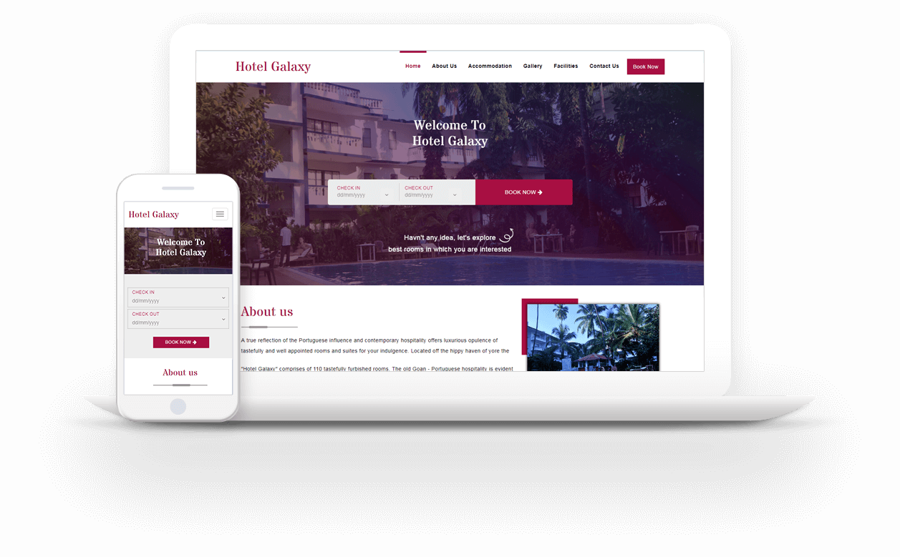
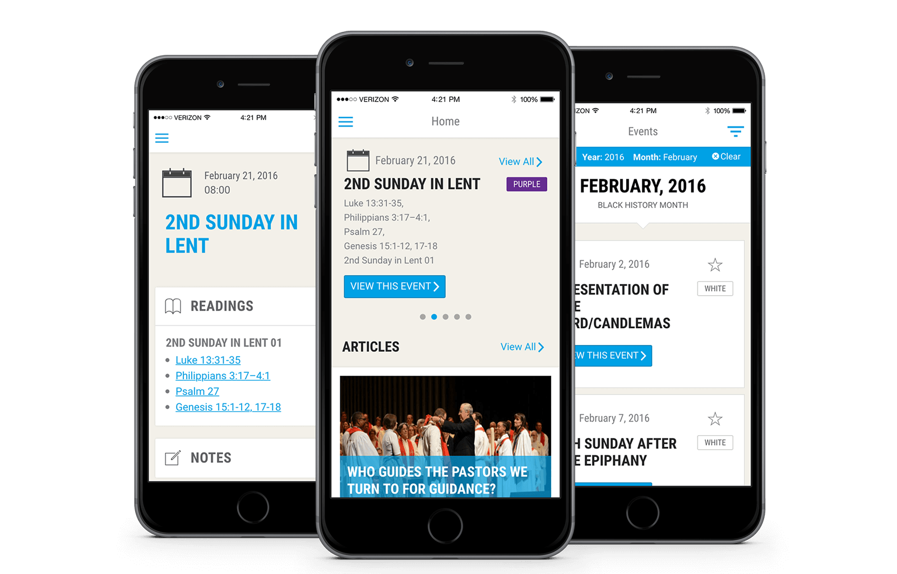
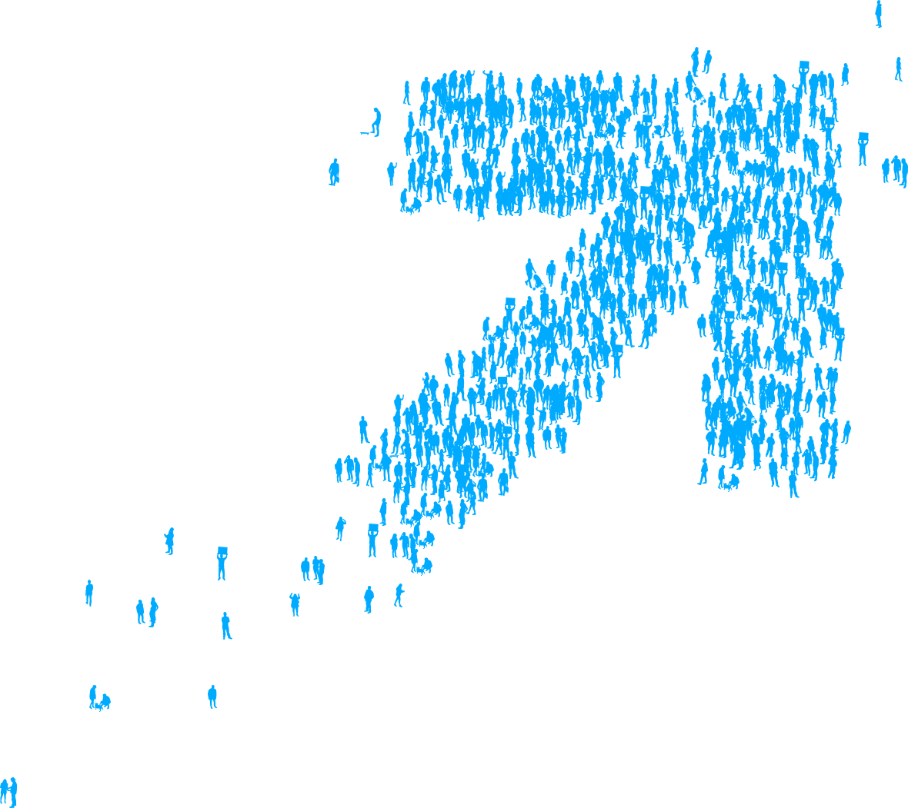

Edu-preneur turned experience designer. Crafting research-driven products and services that traverse end-user and business needs.
Aer Studios
How might we
humanize and streamline
the experience of forming and
running remote/freelance
creative teams?

Fest Series
How might we make
millennial educators
in high-need institutions
feel seen, appreciated and
empowered?

Nexx Ting
How might we
make contemporary music
from around the world
more accessible?

Moveon.org
How might we serve
marginalized young people
in the US's swing states?
